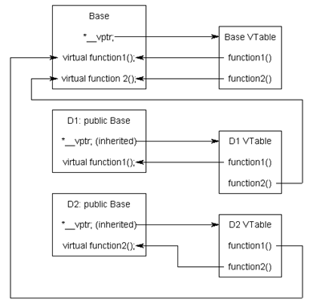
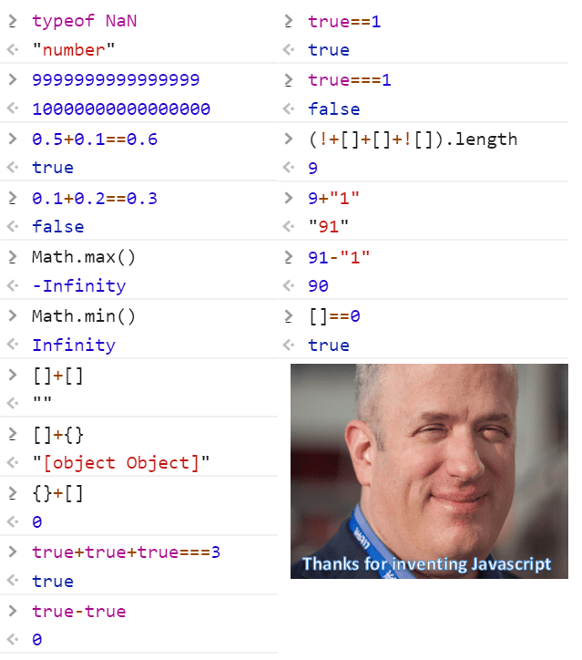

型別系統
在該章節中，深入一點JavaScript中的型別系統
在 JavaScript 中，可以分成基礎型別(或稱原始型別)與複合型別
基礎的 7 種型別分別為
- Null
- Undefined
- Boolean(true, false)
- Number
- Bigint
- String
- Symbol
複合型別包含了
- Function
- Object
快速理解 JavaScript 中的型別系統
對於 Boolean、Number、String 這幾個型別可以用很簡單的方式說明
Boolean 即為 false、true 兩個字面值
Number 則是相當於C++的double值(-(2^53-1) ~ 2^53 - 1)的數值。除了這個範圍的數值中，還包含了Infinity、-Infinity、NaN 三個數值。Infinity、-Infinity 相當於正負無限
NaN 則是代表 Not a Number，通常會出現在不合法的運算，例如
let result = "string" - 100; // NaN
let result2 = "test" * 100 // NaN
let value1 = 100 / 0 // Infinity
let value2 = Math.log(0) // -Infinity
typeof result === "number" // true
請注意，"不合法的運算"是指，使用非"number"型別的運算子進行運算，並非是指 100 / 0 這種運算錯誤
此外， NaN 意思雖然是 Not a Number ，但是型別是 number 若要正確檢測 NaN 的型別，請使用 isNaN() 函式
String 則是指使用 ''、""、以及``所包覆起來的文字，'string' 與 "string" 還有 `string` 三者是同義的，而第三種以(``)則是樣板字串(Template String)，可以嵌入變數
let name = "username"
let str = `Hello, ${name}`
console.log(str) // "Hello, username"
// 等價以下語法：
let str_ = 'Hello, ' + name;
// 允許巢狀嵌入
let condtion = false;
let val1 = "a1234567";
let val2 = "b24681357";
let output = `condtion output: ${condtion ? `val1=${val1}` : `val2=${val2}`}`;
console.log(output) // "condtion output: val2=b24681357"
Bigint 則是大數型別，在數字後加上n，轉型為大數型別。當數字超過一定的範圍，會用字串型別進行處理，而Bigint提供了很基礎的運算：
let val1 = 2 ** 2000 // value out of number range: "Infinity"
let val2 = 2n ** 2000n /*
114813069527425452423283320117768198402231770208869520047764273682576626139237031385
665948631650626991844596463898746277344711896086305533142593135616665318539129989145
312280000688779148240044871428926990063486244781615463646388363947317026040466353970
904996558162398808944629605623311649536164221970332681344168908984458505602379484807
914058900934776500429002716706625830522008132236281291761267883317206598995396418127
021779858404042159853183251540889433902091920554957783589672039160081957216630582755
380425583726015528348786419432054508915275783882625175435528800822842770817965453762
184851149029376 */
Symbol 是個稍微複雜的型別，通常用來建立一個獨特的 Key 值，並作為物件中的成員值 更具體的細節請參考 Symbol
而關鍵字 typeof 則是列出運算式的型別，其回傳值必定是以下幾個字串：
- "bigint"
- "boolean"
- "function"
- "number"
- "object"
- "string"
- "undefined"
其中要注意的是，typeof null的回傳結果是 object， typeof NaN的回傳結果是 number
複合型別
Object 與 Function 是複合型別，嚴格來說，僅有 Object 型別才對
先從 Object 開始提起： 在 JavaScript 中， Object "模擬"成 C++ 的類別，但是又有點不太相同 在JavaScript中，物件的實現方法稱為 "原型鏈" 或是繼承鏈，這裡用 C++ 的 Virtual Function 來說明:

倘若 D1 與 D2 皆繼承了 Base Class，當調用 D1.function1 或是 D2.function2，會先嘗試尋找類別本身的定義，倘若本身無定義的話；會嘗試調用 Base 上的定義
這與 JavaScript 物件的行為十分類似，在JavaScript 存在著所謂原型鏈的定義。先看看早期的JavaScript
/* Define Class, JavaScript 5 */
function User(name, job) {
if(!(this instanceof User)) {
throw new Error("User should use `new` to create Object");
}
this.name = name;
this.job = job;
}
User.prototype.intro = function(){
console.log("My name is " + this.name + " , is a " + this.job);
}
var user = new User('Alex', 'student');
user.intro(); // "My name is Alex , is a student"
user.intro = function(){
console.log("[" + this.name + ", " + this.job + "]");
}
請注意 prototype 這個屬性，可以把該屬性當成 Virtual Member Table，當調用 user.intro 時，
會依序檢查 user.intro > user.prototype.intro > Object.prototype
對於所有 JavaScript 物件，都是繼承自 Object.prototype
在以前沒有 class 關鍵字時，是使用 function 作為函式定義，所以需要使用 this instanceof [FunctionName] 來檢查是調用 User() 還是 new User
關於更多類別的說明，會在下個章節中說明
Note! Virtual Table的說明僅是舉例，內部如何實作未必如此
深拷貝與淺拷貝
對於物件的比較，須注意不能用一般的方式進行比較，這是因為物件的行為比較接近C++中的指標/參考
舉例來說：
let arr0 = new Array() // 補充一下，可以使用 new 來建立陣列
let arr1 = [1,2,3,4]; // 若使用 [] 和 {} 來建構陣列或物件，這種作法稱為字面值(Literal Value)宣告
let arr2 = [1,2,3,4];
let arr3 = arr2
arr1 === arr2 // false
arr3 === arr2 // true
在該例子中，arr1 與 arr2 有著一樣的成員，比較結果卻是 false
反之，arr2和arr3 的比較結果是 true。起初會有些疑惑，但是用等效的C++程式碼說明：
int* arr1 = new int(4);
int* arr2 = new int(4);
int* arr3 = arr1;
arr1 === arr2 // false(因為 address 不同)
arr3 === arr2 // true(因為 address 相同)
這可以說明JavaScript中物件的作法，是比較接近指標，但是看起來卻像是參考，比方說
function append(arr, value) {
arr.push(value);
}
let x = [];
append(x, 100);
console.log(x) // [100]
let y = x;
append(y, 200);
console.log(x) // [100, 200]
當第一次調用 append 時，會把 x 的位址傳入 append；因此外部的 x 被修改了
接下來把 y 指向 x，然後調用append(y, 200)，再次檢查 x 的值，會發現 x 值再次被修改了
對於第二次 append，可以看做 append 內部的 arr 指向 y，y 又指向 x，因此才會被修改
淺拷貝的意思是：不同物件的成員，擁有相同的參考，即為淺拷貝。舉例來說
let Parent = {
arr: [0,1,2,3,4]
};
let ChildA = {
arr: Parent.arr
};
let ChildB = {
arr: Parent.arr
};
// ChildA.arr === ChildB.arr
在這種情況下，因為已經有指標的概念了，所以會注意到 arr: Parent.arr 把同一個物件指定給 ChildA 跟 ChildB 了
若你對 JavaScript 有點概念，可能知道 Object 可以使用 Parent.arr 或是 Parent["arr"] 的方式使用成員，因此你有可能誤用
function clone(source, target) {
for(const [key, value] of Object.entries(source) ) {
target[key] = value;
}
}
let ChildC = {};
let ChildD = {};
clone(Parent, ChildC);
clone(Parent, ChildD);
ChildC === ChildD // false
ChildC.arr === ChildD.arr // true
深拷貝
深拷貝的定義相對單純，可以解釋為不同物件的成員，都擁有不同的參考
以上面的定義，若要複製 array，有幾種方法：
let arr = [0,1,2,3,4];
// sol1?
function clone(source) {
let temp = [];
for(const value of source)
temp.push(value);
return temp;
}
let arr1 = clone(arr);
// sol2?
let arr2 = [...arr];
// sol3?
let arr3 = arr.map(e => e);
//sol4:
let arr4 = JSON.parse(JSON.stringify(arr));
// arr1 ~ arr4 的值皆為 [0,1,2,3,4]，且都不等於 arr
但是請注意，倘若陣列中的值是物件，比方說[{}, {}, {}, {}]，那麼 arr1 ~ arr4 雖然互不相等
但是 arr1[0]、arr2[0]、arr[0] 都會等於 arr[0]，因為他們內部都是指向 arr[0]
而 arr4 則是完全複製，也就是說進行arr4[0].x = 100 這種修改，是不會影響到arr[0]的
因此，僅有 sol4 才算是深拷貝，因為他是先把物件進行 JSON 的序列化，在反序列化回來
這種作法無法複製function(JSON.stringify 不會轉譯function)，也不會複製undefined
通常深拷貝的使用次數不多，且都有Library可以處理，因此只要有概念即可
型別間的比較
在前面幾個章節，會發現交錯使用 == 和 ===，有些人會說 === 指的是嚴格比較，該說法有點道理，但是實際上更單純
先從 JavaScript 的運算子說明，每個運算子都會定義兩邊的運算元型別，而JavaScript有個轉換的優先順序：
/* '+' 運算子可以用在 string + string 或是 number + number */
let a = 'str' + 'ing' //string
let b = 1 + 2 // 3
let c = '200' + 100 // string 的優先度高於 number，先把 100 轉為 '100'，然後相加字串
c // '200100'
/* '-' 運算子僅能用在 number + number */
let d = '1000' - 100 // - 僅接受兩個 number，嘗試把 '1000'轉為 1000，然後相減
d // 900
let e = '100a' - 100 // '100a' 無法轉換為 number，該計算結果為 NaN
那麼回到 == 和 ===， == 的語意是比較時，允許型別轉換；=== 的語意則是 比較時，不允許型別轉換
大致上來說，轉換的順序可以看成 string > number > boolean，當運算元是不同型別的時候，會向上轉換一階：
console.log(true == 1) // true
console.log(true == 'true') // false
/* 分析一下 true == 'true' 這個例子 */
console.log(true == 1) // 代表 Number(true) 會轉成 1
console.log('1' == 1) // 代表 String(1) 會轉成 '1'
console.log(true == '1') // true，左側進行 String(Number(true)) 得到 '1'
但凡事都存在例外，物件可以定義 toString 以及 toJSON，來決定被轉換成 string 和 JSON 的方法
Object 的轉換都會直接隱式調用 obj.toString() 方法
let obj = {};
obj == 10000 // false，因為 obj 會轉換成 '[object Object]'，此時變成 compare(string, number)
//於是 10000 會進行 String(10000) 得到 '10000'，而 '[object Object]' 不相等於 '10000'
let objA = {};
objA == '[object Object]' // true
// 手動定義 toString 方法
objA.toString = function(){
return 10000
}
objA == 10000 // true
而 === 和 !== 就是告知JS引擎，比較時不允許隱式轉換型別
深入理解

由左至右，由上至下來說明這個梗圖：
typeof NaN
typeof NaN 前有說明，NaN 定義於 IEEE 754，表示無效操作(不等同於算數溢位)，但是沒有特別定義 NaN 是否為 number
在JS中，使用 isNaN 來檢測 NaN 值
9999999999999999
9999999999999999 == 10000000000000000 是浮點數的誤差
0.5+0.1 , 0.1+0.2
僅出現在 0.1 + 0.2 的時候，浮點數會出現誤差， 而 0.5 + 0.1 並不會，這也是 IEEE 754 的錯誤，高精度比較法可以用
function equal(a, b) {
let value = Math.abs(a - b);
return value < 1e-15;
}
equal(0.1+0.2 , 0.3) // true
其中 1e-15 是可以自行定義的門檻值，核心作法為"當計算結果小於一個誤差值，視為相同"
Math.max , Math.min
Math.max 的簽章是 Math.max(n1, n2, n3, ...) 會回傳參數中的最大數值
他內部的實作類似：
Math.max = function(...args) {
let currentValue = -Infinity;
for(const value of args) {
if(value > currentValue)
currentValue = value;
}
return currentValue;
}
照圖上的 Math.max()，沒有傳入參數的話，會導致 for-loop 不進行疊代，所以直接回傳currentValue，也就是 -Infinity
Math.min的狀況類似，只是 if 判斷改成 value < currentValue
[ ]+[ ], [ ]+{ }, { }+[ ]
[] + []，在陣列中，轉換為 string 實際上是調用了 join 這個方法，因此
let arr = [1,2,3,4,5,6,7];
arr == arr.join(); // true
arr.join() // '1,2,3,4,5,6,7'
arr == arr.join(' '); // false
arr.join(' ') //1 2 3 4 5 6 7
join(token) 的作法是先把陣列的所有元素轉換為 string 型別，再透過 token 連接起來
[] + {} 則是如同前面說的，會先把 [] 轉換成 ''，然後把 {} 轉換成 '[object Object]'再把 '' + '[object Object]' 字串合併得到 '[object Object]'
{} + [] 為0比較特殊，因為 {} 不可進行估算，所以實際上會看成 {} (+[])，而+[] 會轉成 0，然後進行 {} 0 得出0
這看起來是這個奇怪的結果？首先要知道JS引擎首次估算是用直譯的，所以可能的過程是：
// {} 0 改寫成
{
/* empty scope */
}
0
換句話說，{} + []前面的{} 不是物件，而是當成scope的宣告；接下來後面接一個數值，因此得出 0
證據就是，()不允許定義scope，倘若改成 ({}) + [] 就會視作兩個值進行+運算，所以會轉換成 '[object Object]' + ''，({}) + [] 就會等同 [] + {}
true+true+true, true-true, true==1, true ===1
先理解成
true會轉為 Number 1==會進行型別轉換；===不會轉換- boolean 會先嘗試轉換為
number，然後是string
(!+[]+[]+![]).length
(!+[]+[]+![]).length
先拆解成
!(+[])-+[]會變成+''，然後轉為 0，!0 會轉為true[]- 轉換成''![]-[]轉換成true，然後運算!true得到false
三個值相加得到 'truefalse'，該字串長度為 9
9+"1", 91-"1"
請看上面章節型別間的比較
17
[] == 0 因為 Number([]) 轉換成 0， 0 == 0 得到 true
章節回顧
該章節要描述的概念是 JavaScript 中的型別系統，倘若你是初學者，會不太理解為什麼他表現的狀況跟你想的不一樣
- 理解 JavaScript 中的型別
- 理解Object、Function是使用類似 reference 的方式做傳遞
- 知道深拷貝與淺拷貝的意義(非常重要)
- 比較(==) 和 嚴格比較(===) 兩個運算子的意義